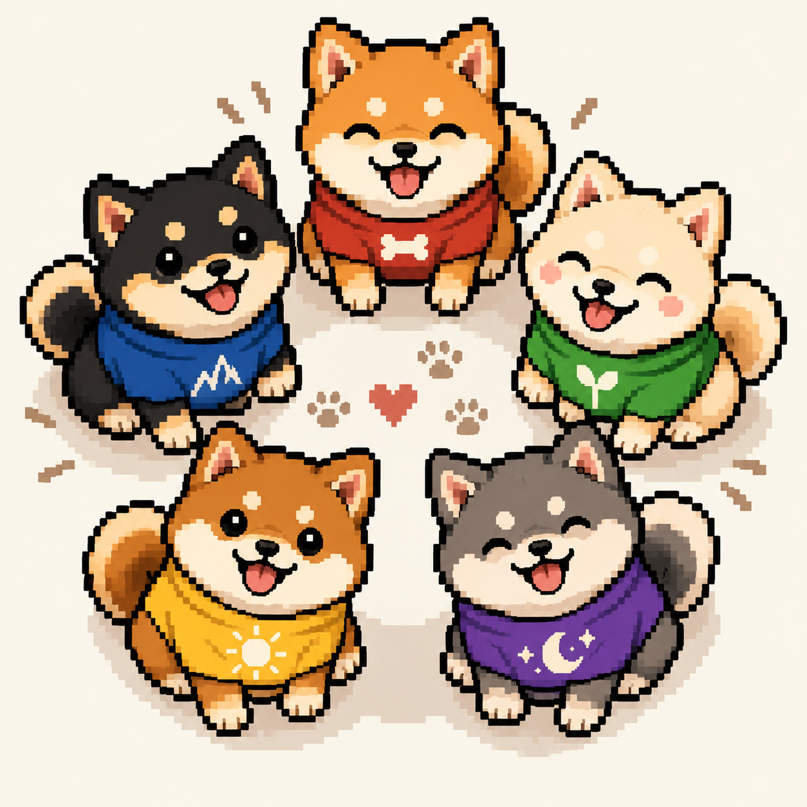
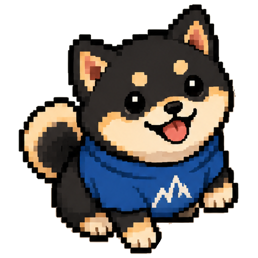
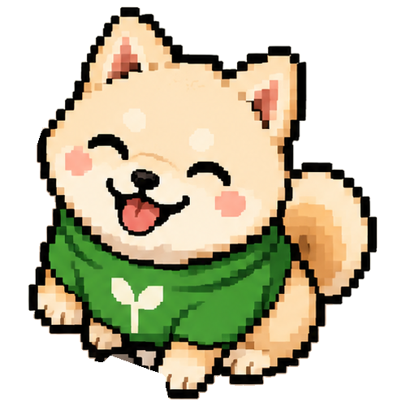
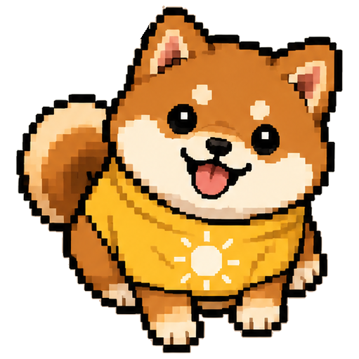
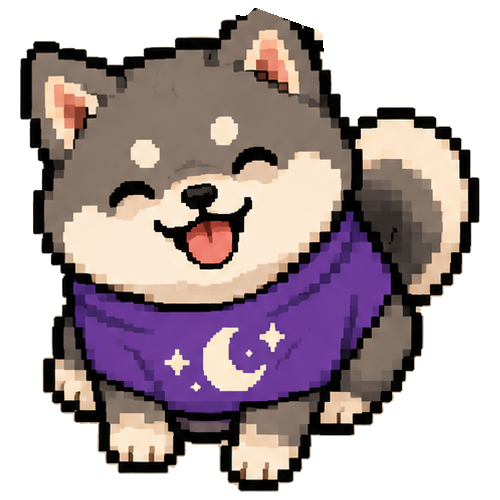

Alpha Fetcher
Biscuit
The pack leader. Biscuit fetches signal from the noise: trending narratives, notable mentions and on-chain activity, then brings back a short, readable summary of what is actually moving.
▶ Five agents. One pack.
3JxxJZcM5aGd9NUeuuv3vjAKFXrqHiu48pUo16EKDEms
A pack of five AI Shiba agents that watch the memecoin market with you. They scan new launches, follow the wallets you care about, surface fresh tokens and keep an eye on your risk, so you can make calmer, better-informed decisions.

The pack
Each Inu has one job and does it well. Together they cover the full loop, from the first sign of a new token to the moment you decide to exit.
Alpha Fetcher
The pack leader. Biscuit fetches signal from the noise: trending narratives, notable mentions and on-chain activity, then brings back a short, readable summary of what is actually moving.

Risk & Charts
Steady as a mountain. Kuro maps support and resistance, flags overextended moves and helps you size positions and set stops before you click buy, not after.

Gem Scout
Mochi digs for tokens while they are still small. It watches fresh pools, early holder growth and contract basics, and only raises a paw when something passes the first checks.

Launch Scanner
Up with the sun. Hinata runs the morning sweep of new launches, filters out the obvious copycats and sends a launch alert the moment a token matches your rules.

Night Watch
Tsuki takes the night shift. It follows the wallets on your watchlist around the clock and lets you know when they buy, sell or move funds while you are away from the screen.
Better together
The agents share context. When Mochi finds a token, Kuro checks the chart, Tsuki looks at who holds it, and you get a single alert with the full picture.
See how it worksGetting started
Add the addresses you want the pack to know about. Watch-only means the agents can read, never move funds.
Turn on the Inus you need and set their rules: minimum liquidity, holder count, wallets to follow, alert hours.
Alerts land in one feed, in the app or on Telegram, each one tagged with the agent that found it and why.
Review Kuro's levels and risk notes, then make your own call. The Inus inform your decisions; you stay in control.
Inside the app
Every agent reports to the same feed. Short, tagged, readable at a glance, with the reasoning one click away.
Illustrative mockup. Token names, wallets and values are placeholders, not real data.
Why the pack
New tokens that match your filters reach you in seconds, not after the first big candle.
Follow any public wallet and see its buys, sells and transfers in plain language.
Every alert ships with basic safety checks and a suggested position size based on your own limits.
Automatic support and resistance zones so you always know where your plan changes.
Choose what can wake you up. Everything else waits in Tsuki's morning recap.
No private keys, no custody. The agents watch and report; trades are always yours to make.
What's next
Questions
No. Agent Inus is a research and alerting tool. The agents watch the market and explain what they see, but every trade is your decision and happens in your own wallet.
Never. You only add public addresses in watch-only mode. If anyone asks for your seed phrase in the name of Agent Inus, it is a scam.
The first release focuses on a single high-activity chain. More chains are planned for Level 3 on the roadmap.
Yes. Each Inu can be switched on or off and configured on its own. Many people start with Hinata and Tsuki, then add the others.
It can help you see risks earlier and plan your exits, but no tool removes risk. Memecoins are extremely volatile; only trade what you can afford to lose.
Early access is opening in waves. Launch the app to join the list and set up your first agents.